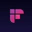

Most "best AI sales tools" articles are written by companies selling you one of the tools on the list. You'll notice the company writing the article always ranks itself first, gives competitors a polite paragraph, and then drops a "start your free trial" button.
This isn't that article.
We build 60, which handles post-meeting automation. That means we have opinions about our category, and we'll be upfront about them. But we also use other tools every day for the jobs 60 doesn't do. This guide covers what actually works, what's not worth your money yet, and where to start if you're a small team with a limited budget.
One thing before we start: small teams don't need the same tools as enterprise sales organisations. Most comparison guides assume you have 50 reps, a RevOps team, and an enablement budget. If that's you, go read Gartner. If you're a team of 1 to 10 reps trying to sell more without drowning in admin, keep reading.
The 6 Jobs Your Sales Stack Needs to Do
Before comparing tools, map your needs to jobs. Every small sales team has these six.
1. Manage your pipeline — Track deals, contacts, and activities in one place (Essential)
2. Find prospects — Identify and enrich leads that match your buyer profile (Essential)
3. Record and transcribe meetings — Capture what was said so nothing gets lost (High)
4. Automate post-meeting admin — Follow-ups, CRM updates, tasks, Slack alerts (High)
5. Enrich and research contacts — Pull company data, signals, and context before outreach (Medium)
6. Analyse conversations — Understand what's working in your sales calls (Medium)
Not on this list: AI-generated cold email at scale. Fix your pipeline and follow-up speed first. Outbound at scale comes later.
Job 1: Pipeline Management
HubSpot CRM
Essential · Day 1 — The free CRM that scales with your team
What it does well
- Genuinely free - contacts, deals, tasks, and email tracking at £0
- Integrates with every other tool on this list out of the box
- Clean enough for a solo founder to set up in an afternoon
Where it falls short
- Free tier reporting is basic; paid tiers get expensive quickly
- Workflows and sequences require Starter ($15/seat) or Professional ($90/seat)
The honest take
Start here. Don't overthink your CRM choice. HubSpot free gets you tracking deals within an hour. You can always migrate later - but you probably won't need to until you're past 10 reps.
Pricing: Free. Starter from $15/month per seat. Professional from $90/month per seat.
Alt: Pipedrive ($14/month) if you want a simpler, visual pipeline without the broader marketing ecosystem.
Job 2: Find Prospects
Apollo.io
Essential · Day 1 — 275M+ contacts, built-in sequencing, generous free tier
What it does well
- Free tier: 10,000 email credits/month - enough to start prospecting immediately
- Strong filters: role, company size, industry, funding stage, tech stack, hiring signals
- Built-in email sequencing means you don't need a separate outbound tool early on
Where it falls short
- Phone number accuracy is inconsistent, especially outside North America
- UI feels cluttered when managing multiple sequences simultaneously
- Credit-based pricing means high-volume enrichment gets expensive fast on paid tiers
The honest take
Best starting point for prospecting. Free tier is generous, data quality is solid for North America and Europe, and built-in sequencing saves you from needing yet another tool.
Pricing: Free (10,000 email credits/month). Basic from $49/month. Professional from $79/month.
Alt: Graduate to Clay when you've outgrown Apollo's data sources and need multi-signal enrichment.

Job 3: Record and Transcribe Meetings
Fireflies.ai
High Priority — Records, transcribes, and pushes notes directly to your CRM
What it does well
- Free tier: 800 minutes of storage with AI summaries - real value for testing the workflow
- Pushes summaries and action items directly into HubSpot deal records
- "Ask Fred" lets you query your meetings in natural language ("What did they say about budget?")
Where it falls short
- Transcribes but doesn't act - you still write the follow-up and update the CRM yourself
- The summary is useful for review, not for triggering automation
The honest take
Best starting point for meeting capture. Good free tier, reliable recording, clean CRM integration. If you need the meeting to trigger actions - not just capture content - you'll outgrow it quickly.
Pricing: Free (800 min storage). Pro from $10/month per seat. Business from $19/month per seat.
Alt: Fathom or Otter.ai both compete well. Try two, keep the one that fits your meeting platform best.
Job 4: Automate Post-Meeting Admin
60
High Priority — Turns every meeting into a completed to-do list - without the manual work
Full disclosure: we built this one. We'll be as honest about its weaknesses as we are about the others.
What it does well
- Drafts follow-up emails that reference what the buyer actually said in the meeting
- Updates HubSpot deal records automatically from the conversation context
- Creates tasks, notifies Slack, and preps briefings for your next meeting
Where it falls short
- Not a CRM, prospecting tool, or conversation intelligence platform - it does one job
- Earlier-stage than enterprise tools; built for 1-10 reps, not 50-person sales floors
The honest take
If your biggest problem is slow follow-ups, stale CRM data, and deals dying in the silence after meetings - 60 solves that specific problem. If your biggest problem is something else, start with the tool that fixes that first.
Pricing: Free trial (7 days). Plans from £29/month.
Job 5: Enrich and Research Contacts
Clay
Medium Priority — Stack 100+ data sources for signal-based outreach that actually converts
What it does well
- Enrichment depth is unmatched - Apollo + LinkedIn + Clearbit + 90+ sources in one table
- Ideal for account-based outreach: find the right people at the right time with the right reason
- Extremely powerful once your workflow is optimised and your ICP is locked
Where it falls short
- Genuine learning curve - the spreadsheet-style interface takes time to master
- Credit-based pricing burns fast before you've optimised the workflow
- Not a day-1 tool; overkill if you're still defining your ideal customer profile
The honest take
Start with Apollo. Move to Clay when you've outgrown it and need multi-signal enrichment for targeted, high-value campaigns. If you're running ABM to a short list of key accounts, Clay pays for itself quickly.
Pricing: Free tier (limited credits). Starter from $134/month. Explorer from $314/month.
Job 6: Analyse Conversations
Gong
Medium Priority — Deep analytics and coaching - for teams that have grown past 8-10 reps
What it does well
- Best-in-class analytics from billions of real sales interactions - pattern recognition no smaller tool can match
- Surfaces which questions lead to closed deals, which competitors get mentioned, which reps need coaching
- Forecasting is strong when you have enough deal volume to generate meaningful signals
Where it falls short
- Expensive: $100-150+/user/month with annual contracts and minimum seat counts
- Primarily intelligence and coaching - it doesn't automate what happens after the call
- Price-to-value ratio only makes sense at 8-10+ reps with a coaching-focused manager
The honest take
Under 5 reps, Gong is hard to justify. Start with Fireflies. Add Gong when your team grows past 8-10 and you need coaching infrastructure to develop your reps at scale.
Pricing: Custom pricing. Typically $100-150+/user/month, annual contracts required.
Alt: Chorus (now ZoomInfo) if you're already paying for ZoomInfo - it's bundled in.
The Recommended Stack by Stage
Not every team needs every tool. Here's what to prioritise based on where you are.
Solo founder or team of 1-2: HubSpot Free (£0), Apollo Free (£0), Fireflies Free (£0), 60 (£29). Total ~£29/month.
A CRM, prospecting database, meeting transcription, and automated follow-ups for the price of a team lunch.
Growing team of 3-10 reps: HubSpot Starter ($15/seat), Apollo Basic ($49), 60 Pro (£99), Clay Starter ($134 shared). Total per rep ~$165-200/month.
Gong enters the conversation once you're past 8-10 reps with a dedicated manager coaching the team.
Skip until you're bigger
- Gong — Wait until 10+ reps with a coaching-focused manager
- Salesloft / Outreach — Enterprise sequencing. Overkill below 15 reps.
- ZoomInfo — Minimum contracts ~$15K/year. Wait until you need scale.
- Clari — Revenue forecasting for 20+ reps with complex pipelines.
Frequently Asked Questions
What's the cheapest AI sales stack for a small team?
HubSpot Free + Apollo Free + Fireflies Free gives you a CRM, prospecting database, and meeting transcription at zero cost. Add 60 at £29/month for post-meeting automation. Total: ~£29/month for a complete AI-assisted sales workflow.
Do I need a sales copilot or AI assistant?
If your biggest bottleneck is post-meeting admin (slow follow-ups, stale CRM data, missed tasks), yes. If your bottleneck is elsewhere (not enough leads, poor call quality, no pipeline visibility), fix that first. The right tool depends on the problem, not the category.
Is Gong worth it for a small team?
Not usually. Gong's value scales with team size. Under 5 reps, the coaching and analytics insights don't generate enough data to be actionable. Start with Fireflies for transcription and revisit Gong when your team grows past 8-10.
Should I use one tool that does everything or specialise?
Specialise. All-in-one platforms make compromises in every category. A focused CRM (HubSpot) + a focused prospecting tool (Apollo) + a focused post-meeting tool (60) will outperform any single platform trying to do all three. The integration between them matters more than consolidation.
What about AI for cold email outreach?
Tools like Instantly, Lemlist, and Saleshandy handle cold email well. Most small teams should nail their follow-up and pipeline management before scaling outbound. If you're ready for it, Instantly is a strong starting point.
How do I know if an AI sales tool is worth the cost?
Calculate the time saved per week, multiply by your hourly rate, and compare to the tool's monthly cost. If 60 saves a rep 5 hours per week on post-meeting admin, and that rep's time is worth £40/hour, that's £800/month in recovered selling time against a £29-99/month cost. Apply the same logic to every tool you consider.